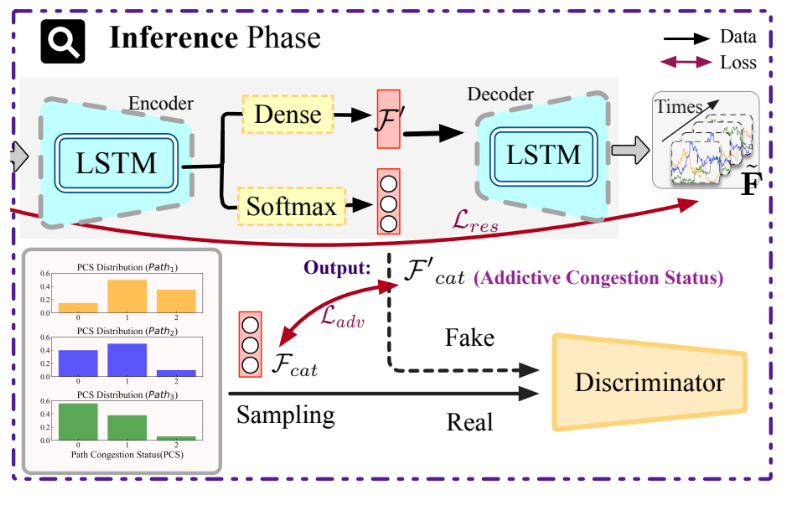

|
Chengze Du I am currently pursuing my bachelor's degree at the School of Cyberspace Security, Beijing University of Posts and Telecommunications(BUPT), from 2021 to the present. I' m passionate about travel, marathons. In academic terms, my research interests include but not limited: Network Tomography, Deep Learning, Differential Privacy, Artificial intelligence of things. Email / CV / Google Scholar / Gitee |
ResearchI'm interested in Network Tomography, Deep Learning, Differential Privacy, Artificial intelligence of things. Some papers are highlighted. |


|
SecureNT: A Practical Framework for Efficient Topology Protection and Monitoring
Chengze Du, Jibin Shi arXiv, 2024 project page / arXiv This paper introduces a novel privacy-preserving framework, which provides efficient topology protection while maintaining the utility of measurements for authorized network monitoring. |
|  |
Identification of Path Congestion Status from End-to-End Measurements Using Deep Spatial-Temporal Learning
Chengze Du, Zhiwei Yu, Xiangyu Wang Comoputer Communications, 2024 This work introduces the concept of Additive Congestion Status to address these challenges effectively. Using a framework that combines Adversarial Autoencoders (AAE) with Long Short-Term Memory (LSTM) networks, this approach robustly categorizes and quantifies the Additive Congestion Status. |
Education & Experience |
|
Beijing University of Posts and Telecommunications
B.E. in Cyberspace Security Sep 2021 - Jun 2025 • Thesis Title: Secure training methods for large language models based on differential privacy • Supervisor: Jinguo Bi |
|
|
Zhipu AI
Intern in AI Department Oct 2024 - Jan 2025 |
Other Contributions |
Misc |
|
Last updated: 2024-12-12. And thanks this website's source code. |